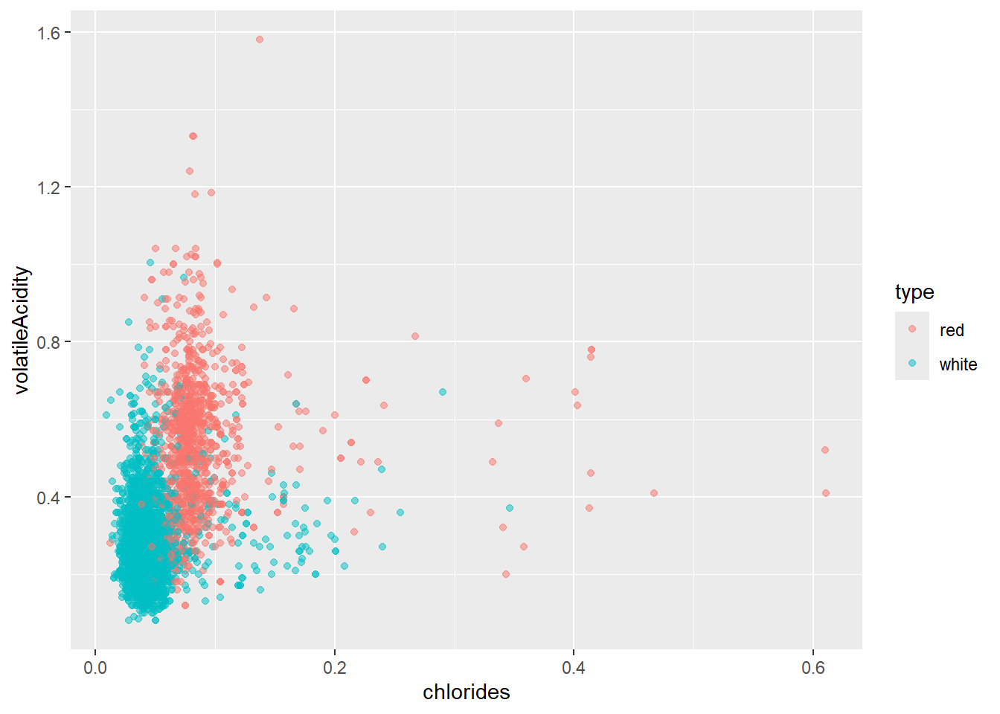

14 Uvod u prediktivno modeliranje
14.1 Što je prediktivno modeliranje?
U prethodnom poglavlju prikazali smo kako uz pomoć linearne regresije možemo istražiti i modelirati međuodnos dvaju (ili više) varijabli. Ukoliko postoji kolinearnost između dvije promatrane varijable, onda se njihov odnos može modelirati uz pomoć jednostavne jednadžbe pravca, koja potom omogućuje da iz poznate vrijednosti jedne od varijabli pokušamo procijeniti vrijednost druge varijable. Ovo je osnovna ideja tzv. “prediktivnog modeliranja” - postupak kojim na osnovu poznatih ulaza i razvijenih prediktivnih modela dobivamo informaciju o nepoznatim izlazima, tj. ciljevima. Što su modeli bolji, to je naše “pogađanje” nepoznatih izlaza kvalitetnije. Ili, kako to definiraju Kuhn i Johnson u svojoj knjizi “Applied Predictive Modelling”:
Prediktivno modeliranje je proces razvoja matematičkog alata ili modela koji je u mogućnosti stvoriti točne predikcije.
Prediktivno modeliranje ima brojne mogućnosti uporabe u raznim domenama npr.:
- predviđanje količine prodanih proizvoda ili profita
- identifikacija korisnika koji planiraju otkazati pretplatu
- dijagnostika bolesti
- procjena vrijednosti nekretnine
- predviđanje gledanosti filma na prvi vikend prikazivanja
- detekcija spama u elektroničkoj pošti
- itd.
Kod razvoja prediktivnih modela jako je važno:
- imati kvalitetne i adekvatno pripremljene podatke
- odabrati prikladnu metodu za stvaranje modela
- ispravno provesti proces evaluacije i validacije modela
Uloga analitičara u ovom procesu jest da kvalitetno provede sve korake analize te izbjegne sve potencijalne zamke i pogreške koje se tu mogu pronaći. Naime, prediktivni modeli mogu u konačnici imati loše performanse iz niza razloga - loše pripremljeni podaci, loše provedena validacija, primjena modela na neadekvatnom skupu, izrada modela koji nemaju sposobnost generalizacije itd.
U ovom poglavlju upoznati ćemo se sa nekim osnovnim smjernicama kojih se moramo pridržavati tijekom prediktivnog modeliranja. Također ćemo se upoznati sa paketima jezika R koji omogućuju da mnoge složene korake prepustimo računalu, tj. da pristupimo modeliranju sa visoke razine apstrakcije dok računalo samostalno obavlja niskorazinske korake pripreme podataka, modeliranja i validacije.
14.2 Podaci za treniranje i testiranje modela
Kada smo u prethodnom poglavlju stvarali linearne modele koji su mapirali ulaze u izlaz, tj. “prediktore” u “ciljnu varijablu”, nakon stvaranja modela smo uz pomoć funkcije summary gledali sažete informacije o modelu - procjenu povezanosti prediktora i cilja, prosječnu standardnu grešku kod predviđanja, mjeru R-kvadrat koja procjenjuje objašnjenu varijabilnost itd. Ove informacije omogućile su nam evaluaciju kvalitete razvijenih modela.
No u cijelom ovom procesu zanemarili smo jednu ključnu stvar - sve ove informacije ticale su se podataka korištenih za stvaranje samog modela. Drugim riječima, dobili smo uvid koliko dobro model radi nad poznatim podacima, tj. podacima koje je model već vidio tijekom stvaranja modela. U pravilu nam je puno važnije procijeniti koliko dobro model radi nad nepoznatim podacima, tj. kakva će biti kvaliteta predikcija jednom kad model dobije nove podatke. Kažemo da želimo modele koji dobro generaliziraju, tj. modele koji su dobro naučili neke općenite karakteristike entiteta iz domene opisanih dobivenim podacima, a ne samo specifičnosti skupa podataka korištenih za razvijanje samog modela. Ovu potonju pojavu zovemo “prenaučenost” (engl. overfitting).
Vrlo često u trenutku stvaranja modela imamo samo jedan podatkovni skup kojeg bismo trebali koristiti i za treniranje i za evaluaciju modela. Kao što smo već rekli, korištenje istih podataka u obje svrhe ne daje nam dovoljno dobru informaciju o tome kako model generalizira. Zbog toga je uobičajena procedura da inicijalni skup dijelimo na dva dijela - skup za treniranje i skup za testiranje.
Kako odlučiti koje opservacije pridijeliti kojem skupu? Koliko opservacija staviti u jedan, a koliko u drugi skup? U pravilu bi i skup za treniranje i skup za testiranje trebali imati dovoljan broj opservacija kako bi dobiveni rezultati mogli biti statistički relevantni, tako da bi uz pretpostavku dovoljno velikog skupa podjela na dva jednaka dijela mogla biti zadovoljavajuće rješenje. Ipak, u praksi se najčešće nešto više opservacija ostavlja za treniranje nego za testiranje, tako da je uobičajeno skup rezati prema omjeru 70 : 30, tj. 70% opservacija staviti u skup za treniranje, a ostatak u skup za testiranje.
Što se postupka odabira opservacija (tj. “uzorkovanja”) tiče, postoji nekoliko uobičajenih postupaka:
- nasumični odabir
- stratificirani nasumični odabir (osiguravanje jednake zastupljenosti određenih kategorija u oba skupa)
- odabir prema vremenskoj oznaci (ako nam je vremenska komponenta ključna, tj. bitno nam je procijeniti koliko dobro podaci iz prošlosti predviđaju događaje iz budućnosti)
Nasumični odabir je uobičajena metoda, a sofisticiraniju metodu uzorkovanja možemo odabrati ako za to postoji jasna potreba.
Pokušajmo sada primjeniti ova saznanja na razvoju modela linearne regresije pri čemu ćemu usporediti njegovu učinkovitost nad trening skupom, a potom nad testnim podacima. Za ovo ćemo se poslužiti novim skupom podataka vezanim uz karakteristike i kvalitetu vina, wines.csv. Ovaj skup nastao je prilagodbom skupa “Wine Quality Data Set” sa portala “UCI Machine Learning Repository”, dostupnom na ovoj poveznici.
U sljedećem zadatku učitati ćemo ovaj skup te napraviti neke prilagodbe - kategorizirati ćemo stupce koji očito sadržavaju kategorijsku varijablu te izbaciti retke sa nedostajućim vrijednostima. Retci sa nedostajućim vrijednostima često zahtijevaju malo više pažnje te sofisticiraniji pristup od jednostavnog uklanjanja, pogotovo kod veće količine nedostajućih vrijednosti ili potencijalnih dodatnih informacija koje te vrijednosti donose. No u našem slučaju ovakvih redaka je iznimno malo, a kod primjene određenih metoda prediktivnog modeliranja mogu stvarati probleme, tako da ćemo ih jednostavno ukloniti. Jedan od brzih načina kako ovo provesti je korištenje funkcije complete.cases, koja za dani podatkovni okvir vraća indekse svih redaka koji nemaju niti jednu nedostajuću vrijednost.
Zadatak 14.1 - skup wine quality
# u varijablu `wine` učitajte podatke iz datoteke `wines.csv`
# proučite učitani podatkovni okvir
# kategorizirajte stupce prema potrebi
# i uklonite retke sa nedostajućim vrijednostima ako ih imawine <- read_csv("wines.csv")
glimpse(wine)
wine$type <- factor(wine$type)
wine <- wine[complete.cases(wine),]## Rows: 6497 Columns: 13
## ── Column specification ──────────────────────────────────────────────────────────
## Delimiter: ","
## chr (1): type
## dbl (12): fixedAcidity, volatileAcidity, citricAcid, residualSugar, chloride...
##
## ℹ Use `spec()` to retrieve the full column specification for this data.
## ℹ Specify the column types or set `show_col_types = FALSE` to quiet this message.## Rows: 6,497
## Columns: 13
## $ fixedAcidity <dbl> 7.4, 7.8, 7.8, 11.2, 7.4, 7.4, 7.9, 7.3, 7.8, 7.5, …
## $ volatileAcidity <dbl> 0.700, 0.880, 0.760, 0.280, 0.700, 0.660, 0.600, 0.…
## $ citricAcid <dbl> 0.00, 0.00, 0.04, 0.56, 0.00, 0.00, 0.06, 0.00, 0.0…
## $ residualSugar <dbl> 1.9, 2.6, 2.3, 1.9, 1.9, 1.8, 1.6, 1.2, 2.0, 6.1, 1…
## $ chlorides <dbl> 0.076, 0.098, 0.092, 0.075, 0.076, 0.075, 0.069, 0.…
## $ freeSulfurDioxide <dbl> 11, 25, 15, 17, 11, 13, 15, 15, 9, 17, 15, 17, 16, …
## $ totalSulfurDioxide <dbl> 34, 67, 54, 60, 34, 40, 59, 21, 18, 102, 65, 102, 5…
## $ density <dbl> 0.9978, 0.9968, 0.9970, 0.9980, 0.9978, 0.9978, 0.9…
## $ pH <dbl> 3.51, 3.20, 3.26, 3.16, 3.51, 3.51, 3.30, 3.39, 3.3…
## $ sulphates <dbl> 0.56, 0.68, 0.65, 0.58, 0.56, 0.56, 0.46, 0.47, 0.5…
## $ alcohol <dbl> 9.4, 9.8, 9.8, 9.8, 9.4, 9.4, 9.4, 10.0, 9.5, 10.5,…
## $ quality <dbl> 5, 5, 5, 6, 5, 5, 5, 7, 7, 5, 5, 5, 5, 5, 5, 5, 7, …
## $ type <chr> "red", "red", "red", "red", "red", "red", "red", "r…Pretpostavimo da je atribut quality ciljna varijabla, a svi ostali stupci potencijalni prediktori.
Kako rastaviti ovaj skup nasumičnim odabirom na skup za treniranje i skup za testiranje? Postoji više načina kako ovo provesti, pa čak i specijaliziranih funkcija i paketa za ovu svrhu, no mi ćemo naučiti jednostavno i lako razumljivu metodu koja koristi funkciju sample. Ako prepostavimo da je df podatkovni okvir koje želimo rastaviti na trening i test skup koje ćemo pohraniti u varijable df.train i df.test, onda rastavljanje nasumičnim odabirom možemo provesti ovako:
train_size <- 0.7 * nrow(df) %>% round # otprilike 70%
train_ind <- sample(1:nrow(df), train_size) # indeksi trening opservacija
df.train <- df[train_ind, ]
df.test <- df[-train_ind, ]Primjenimo to na našem podakovnom skupu o vinima, a potom istrenirajmo model linearne regresije na trening skupu.
Zadatak 14.2 - Rezanje ulaznog skupa i treniranje modela
set.seed(1234)
# rastavite podatkovni okvir `wine` na `wine.train` i `wine.test`
# metodom nasumičnog odabira prema omjeru 70:30
# istrenirajte model linearne regresije `linMod` nad skupom `wine.train`
# ciljna varijabla je `quality` a sve ostale prediktori
# proučite sažetak dobivenog modela# istrenirajte model linearne regresije `linMod` nad skupom `wine.train`
# ciljna varijabla je `quality` a sve ostale prediktori
# proučite sažetak dobivenog modela
linMod <- lm(quality ~ ., data = wine.train)
summary(linMod)##
## Call:
## lm(formula = quality ~ ., data = wine.train)
##
## Residuals:
## Min 1Q Median 3Q Max
## -3.6077 -0.4616 -0.0409 0.4637 3.0352
##
## Coefficients:
## Estimate Std. Error t value Pr(>|t|)
## (Intercept) 1.226e+02 1.846e+01 6.643 3.44e-11 ***
## fixedAcidity 9.438e-02 1.955e-02 4.828 1.42e-06 ***
## volatileAcidity -1.600e+00 9.558e-02 -16.736 < 2e-16 ***
## citricAcid -1.373e-01 9.414e-02 -1.459 0.144664
## residualSugar 6.943e-02 7.438e-03 9.335 < 2e-16 ***
## chlorides -6.106e-01 3.887e-01 -1.571 0.116274
## freeSulfurDioxide 5.488e-03 9.148e-04 5.999 2.14e-09 ***
## totalSulfurDioxide -1.340e-03 3.805e-04 -3.522 0.000432 ***
## density -1.218e+02 1.871e+01 -6.513 8.18e-11 ***
## pH 5.275e-01 1.106e-01 4.770 1.90e-06 ***
## sulphates 7.499e-01 9.096e-02 8.244 < 2e-16 ***
## alcohol 2.069e-01 2.335e-02 8.859 < 2e-16 ***
## typewhite -4.546e-01 6.927e-02 -6.563 5.87e-11 ***
## ---
## Signif. codes: 0 '***' 0.001 '**' 0.01 '*' 0.05 '.' 0.1 ' ' 1
##
## Residual standard error: 0.7292 on 4533 degrees of freedom
## Multiple R-squared: 0.3106, Adjusted R-squared: 0.3088
## F-statistic: 170.2 on 12 and 4533 DF, p-value: < 2.2e-16Vidimo da je prilagođena R-kvadrat mjera relativno niska a prosječna greška dosta visoka, tako da je moguće da linearna regresija nije previše dobar odabir za ovaj scenarij (ili dobivene karakteristike vina jednostavno nisu dovoljno dobre za predviđanje njegove kvalitete). Usprkos tome, provjerimo koliko dobro model generalizira, tj. koliko dobro “pogađamo” kvalitetu na testnom skupu opservacija.
Kako bismo provjerili kvalitetu našeg modela, moramo odabrati kriterij prema kojemu ćemo se ravnati. Kod pogađanja numeričkih vrijednosti često se koristi tzv. RMSE (engl. root mean square error). Konkretno, za svaki opservaciju izračunamo pogrešku (rezidual), kvadriramo i sumiramo sve pogreške, potom podijelimo sa brojem opservacija i korjenujemo konačni rezultat:
\[RMSE = \sqrt{\frac{\sum_{i = 1}^{n}(\widehat{y}_{i} - y_{i})^2}{n}}\]
gdje je n broj opservacija, \(\widehat{y}_{i}\) predikcija i-te opservacije a \(y_{i}\) stvarna vrijednost ciljne varijable te opservacije.
Alternativa ovoj mjeri je MAE (engl. mean absolute error), koja se računa na sljedeći način:
\[MAE = \frac{\sum_{i = 1}^{n}|\widehat{y}_{i} - y_{i}|}{n}\]
Mjera MAE je ponešto intuitivnija, ali i matematički složenija kod provođenja optimizacijskih funkcija. Isto tako, RMSE mjeri dajemo prednost kada želimo jače penalizirati veće pogreške.
Iako postoje paketi koji sadrže funkcije za izračun ovih mjera, možemo ih vrlo jednostavno i samostalno isprogramirati. U nastavku ćemo se usredotočiti na mjeru RMSE, a mjeru MAE ostavljamo za vježbu.
Zadatak 14.3 - Funkcija za računanje RMSE mjere
# stvorite funkciju `rmse` koja će za zadane vektore `pred` i `stv`
# izračunati RMSE mjeru prema gornjoj formuliDodajmo sada skupovima wine.train i wine.test stupac koji će sadržavati predikcije dobivene našim modelom linearne regresije, a potom izračunajmo vrijednost RMSE mjere nad jednim i drugim skupom.
Zadatak 14.4 - Evaluacija modela na trening i test skupu
# uz pomoć funkcije `predict` i modela `linMod`
# skupovima `wine.train` i `wine.test` dodajte stupac `predQualityLR`
# koji će sadržavati predikciju kvalitete vina
# ispišite vrijednost RMSE mjere za jedan i drugi skup
# uklonite stupac `predQualityLR` iz skupa `wine.train`# uz pomoć funkcije `predict` i modela `linMod`
# skupovima `wine.train` i `wine.test` dodajte stupac `predQualityLR`
# koji će sadržavati predikciju kvalitete vina
wine.train$predQualityLR <- predict(linMod, wine.train)
wine.test$predQualityLR <- predict(linMod, wine.test)
# ispišite vrijednost RMSE mjere za jedan i drugi skup
rmse(wine.train$predQualityLR, wine.train$quality)
rmse(wine.test$predQualityLR, wine.test$quality)
# uklonite stupac `predQualityLR` iz skupa `wine.train`
wine.train$predQualityLR <- NULL## [1] 0.7281868
## [1] 0.7435729Vidimo da RMSE za trening skup otprilike odgovara rezidualnoj standardnoj grešci dobivenoj u sažetku modela (mala razlika očituje se u tome što smo mi dijelili sa ukupnim brojem opservacija, dok je kod izračuna rezidualne standardne greške korišten broj stupnjeva sloboda, tj. broj opservacija umanjen za broj “zavisnih” varijabli, tj. prediktora). Ono što nam je interesantno jest činjenica da vrijednost RMSE mjere testnog skupa nije dramatično različita od RMSE mjere, što znači da model gotovo jednako dobro (ili loše) radi i nad novim podacima.
NAPOMENA: ako ne želimo samostalno programirati funkciju za izračun mjere RMSE; možemo instalirati paket Metrics koji sadrži jednostavne implementacije funkcija rmse i mae.
Nakon što smo proveli evaluaciju modela, ukoliko želimo koristiti isti za predikciju nad novim podacima, onda obično stvorimo novi model koji koristi sve podatke koje trenutno imamo, tj. i trening i test podatke kao zajednički skup nad kojem treniramo “konačnu” inačicu modela.
14.3 Metode unakrsne validacije
Jedna podjela podatkovnog skupa na trening i test skup nam može dati dojam koliko model dobro generalizira, no uvijek se može postaviti pitanje da li je baš takva podjela koju smo odredili jedinstvenim rezom dovoljno reprezentativna, tj. koliko bi se performanse i svojstva modela promijenila ukoliko bismo opet napravili podjelu istom skupa pri čemu bi se zbog slučajnog odabira treniralo i testiralo na nešto drugačijim podskupovima podataka.
Pojam unakrsne validacije ili krosvalidacije odnosi se na ideju treniranja niza modela na istim podacima kako bi se dobio bolji dojam o stabilnosti modela i sposobnosti generalizacije. Jedna od poznatijih metoda ovakve validacije je tzv. K-fold krosvalidacija, kod koje podatkovni skup podijelimo na K (pod)jednakih dijelova te potom treniramo K modela, gdje se kod svakog jedan od K dijelova ostavlja za testiranje, a preostalih K-1 se koristi za treniranje modela. Na ovaj način možemo dobiti K zasebnih evaluacija koje možemo zasebno analizirati (npr. gledati njihovu sredinu i standardnu devijaciju) što će nam dati bolji uvid u funkcioniranje modela.
Kako bismo dobili bolji uvid u funkcioniranje K-fold krosvalidacije pokušajmo ju provesti ručno, sličnim načinom kao što smo napravili jedno rezanje na trening i test skup. Za potrebe rezanja skupa na K dijelova možemo se koristiti funkcijama split i cut - varijantu funkcije cut smo već upoznali u poglavlju o upravljanju podatkovnim skupovima gdje smo saznali kako ista pretvara numerički vektor u kategorijski s jednakom zastupljenosti broja opservacija, dok funkcija split može koristiti rezultat funkcije cut kako bi originalni vektor razrezala na jednake dijelove. Konkretno, pogledajmo kako razrezati vektor 1:99 na 10 gotovo jednakih dijelova, pri čemu će indeksi unutar svakog dijela biti nasumično odabrani.
v <- 1:99
v <- sample(v, length(v), F) # "miješanje" elemenata
k <- 10
folds <- split(v, cut(1:length(v), k, labels = F))
folds[[1]] # primjer jednog podskupa## [1] 84 2 98 89 47 31 22 74 32 9Vidimo da su elementi vektora v prvo “promiješani” preko funkcije sample, a potom preko kombinacije split i cut smješteni u listu od k elemenata gdje svaki element predstavlja podskup elemenata originalnog vektora v. Ako vektor v sadrži indekse naših opservacija smještenih u podatkovni okvir df, onda folds[[i]] sadrži indekse nasumičnog odabranih testnih opservacija i-tog segmenta, pa će u i-toj iteraciji naše rezanje na trening i test skup izgledati ovako:
Zadatak 14.5 - K-fold krosvalidacija
set.seed(1234)
k <- 5
# uz pomoć for petlje i gornjih primjera programskog koda
# ručno provedite k-fold krosvalidaciju linearnog modela okvira `wine`
# koji će procijenjivati vrijednost varijable `quality`
# naspram svih ostalih varijabli kao prediktora
# za svaki model izračunajte i ispišite RMSE mjeru testnog skupaset.seed(1234)
k <- 5
ind <- 1:nrow(wine)
ind <- sample(ind, length(ind), F) # "miješanje" elemenata
folds <- split(ind, cut(ind, k, labels = F))
for (i in 1:k) {
wine.train <- wine[-folds[[i]], ]
wine.test <- wine[folds[[i]], ]
linMod <- lm(quality ~ ., data = wine.train)
wine.test$predQualityLR <- predict(linMod, wine.test)
rmse(wine.test$predQualityLR, wine.test$quality) %>% print
}## [1] 0.7121545
## [1] 0.7978801
## [1] 0.7723553
## [1] 0.7482161
## [1] 0.7168595Ukoliko želimo, možemo pohraniti RMSE mjeru svakog segmenta u vektor rezultata te potom gledati “prosječni” RMSE te njegovu varijabilnost preko izračuna varijance ili standardne devijacije skupa. Slično kao i kod jednog rezanja na trening i test skup, ukoliko želimo imati konačni model za buduće podatke, isti ćemo stvoriti retreniranjem modela nad svim dostupnim podacima.
14.4 LOOCV krosvalidacija
Još jedan način krosvalidacije je tzv. LOOCV krosvalidacija (eng. leave one out crossvalidation). Ova krosvalidacija je zapravo granični slučaj K-fold krosvalidacije gdje radimo onoliko podskupova koliko ima opservacija, tj. za n opservacija treniramo n modela, pri čemu kod svakog treniranja jednu opservaciju ostavljamo sa strane te na njoj testiramo. Ovakav način krosvalidacije je moguć kada su resursi računalne platforme dovoljno jaki (ili treniranje modela dovoljno skromno glede zahtjeva nad istima) da se u razumnom vremenu može trenirati toliko veliki broj modela.
Isprobajmo ovakav način krosvalidacije na našem podatkovnom skupu, opet uz korištenje RMSE mjere za procjenu kvalitete modela. Obzirom da ćemo sada dobiti veliki broj rezultantnih mjera, umjesto ispisa na zaslon pohraniti ćemo ih u zaseban vektor te na kraju ispisati njegovu sredinu i standardnu devijaciju.
Zadatak 14.6 - K-fold krosvalidacija
set.seed(1234)
RMSEsve <- numeric(nrow(wine))
# uz pomoć for petlje ručno provedite LOOCV krosvalidaciju
# linearnog modela okvira `wine` koji će procijenjivati vrijednost varijable `quality`
# naspram svih ostalih varijabli kao prediktora
# izračunajte RMSE mjeru za svaki model i pohranite ju u rezultantni vektor `RMSEsve`
# a potom ispišite sredinu i standardnu devijaciju svih rezultataset.seed(1234)
RMSEsve <- numeric(nrow(wine))
for (i in 1:nrow(wine)) {
wine.train <- wine[-i, ]
wine.test <- wine[i, ]
linMod <- lm(quality ~ ., data = wine.train)
RMSEsve[i] <- rmse(predict(linMod, wine.test), wine[i, ]$quality)
}
cat(str_c("Prosječni RMSE: ", mean(RMSEsve) %>% round(2)))
cat(str_c("\nSt.dev. RMSE: ", sd(RMSEsve) %>% round(2)))## Prosječni RMSE: 0.57
## St.dev. RMSE: 0.46Kao što smo vidjeli, “ručno” provođenje krosvalidacije je izvedivo ali zahtijeva dosta “niskorazinskog” programiranja. U praksi ćemo za ovaj posao koristiti pakete koji nam omogućuju deklarativno provođenje ovog i sličnig poslova. Jedan od popularnijih paketa za ovu svrhu je paket caret, preko kojeg možemo niz poslova vezanih uz treniranje modela obaviti automatski, postavljanjem adekvatnih parametara i kontrolnih objekata.
14.5 Paket caret i prediktivno modeliranje
Paket caret zapravo predstavlja skup alata za učinkovito obavljanje svih elemenata procesa prediktivnog modeliranja:
- razdvajanje skupa na podskupove za treniranje / testiranje / validaciju
- pretprocesiranje podataka
- odabir značajki
- podešavanje modela uz pomoć ponovnog uzorkovanja
- procjena važnosti varijabli
Kao što paket dplyr zapravo mijenja način kako koristimo jezik R za upravljanje podatkovnim okvirima, tako i paket caret omogućuje temeljitu izmjenu pristupa prediktivnom modeliranju uz pomoć ovog jezika. Funkcije paketa caret ne samo da omogućuju čišću, pregledniju sintaksu kod obavljanja niskorazinskih poslova, one također daju i mogućnost prediktivnog modeliranja na visokoj razini, gdje deklarativnim pozivima objašnjavamo što želimo provesti, i puštamo R da sam odradi niskorazinske poslove i vrati nam odgovarajući rezultat.
Detalje o ovom paketu možemo naći na ovoj poveznici, a u nastavku ćemo dati samo kratki uvid u neke od impresivnih mogućnosti ovog paketa.
Kako bi demonstrirali deklarativnu prirodu prediktivnog modeliranja uz pomoć ovog paketa, pobliže ćemo pogledati dvije funkcije: train i trainControl.
Funkcija train zapravo predstavlja jedinstveno sučelje prema velikom broju prediktivnih modela (popis svih modela koje funkcija trenutno podržava možemo naći ovdje). U velikom broju slučajeva poziv ove funkcije ne razlikuje se bitno od poziva funkcija metoda prediktivnog modeliranja koje smo do sada upoznali. U nastavku ćemo upoznati složeniji oblik ove funkcije, ali za početak prikažimo njen pojednostavljeni oblik:
Pokušajmo trenirati model linearne regresije uz pomoć funkcije train i već pripremljenog skupa wine.train.
Zadatak 14.7 - Funkcija train i linearna regresija
train_ind <- sample(1:nrow(wine), 0.7 * nrow(wine) %>% round) # indeksi trening opservacija
wine.train <- wine[train_ind, ]
# uz pomoć funkcije `train` paketa `caret`
# istrenirajte model linearne regresije `linMod` nad skupom `wine.train`
# ciljna varijabla je `quality` a sve ostale prediktori
# parametar `method` postavite na `"lm"`
# proučite sažetak dobivenog modela##
## Call:
## lm(formula = .outcome ~ ., data = dat)
##
## Residuals:
## Min 1Q Median 3Q Max
## -3.6077 -0.4616 -0.0409 0.4637 3.0352
##
## Coefficients:
## Estimate Std. Error t value Pr(>|t|)
## (Intercept) 1.226e+02 1.846e+01 6.643 3.44e-11 ***
## fixedAcidity 9.438e-02 1.955e-02 4.828 1.42e-06 ***
## volatileAcidity -1.600e+00 9.558e-02 -16.736 < 2e-16 ***
## citricAcid -1.373e-01 9.414e-02 -1.459 0.144664
## residualSugar 6.943e-02 7.438e-03 9.335 < 2e-16 ***
## chlorides -6.106e-01 3.887e-01 -1.571 0.116274
## freeSulfurDioxide 5.488e-03 9.148e-04 5.999 2.14e-09 ***
## totalSulfurDioxide -1.340e-03 3.805e-04 -3.522 0.000432 ***
## density -1.218e+02 1.871e+01 -6.513 8.18e-11 ***
## pH 5.275e-01 1.106e-01 4.770 1.90e-06 ***
## sulphates 7.499e-01 9.096e-02 8.244 < 2e-16 ***
## alcohol 2.069e-01 2.335e-02 8.859 < 2e-16 ***
## typewhite -4.546e-01 6.927e-02 -6.563 5.87e-11 ***
## ---
## Signif. codes: 0 '***' 0.001 '**' 0.01 '*' 0.05 '.' 0.1 ' ' 1
##
## Residual standard error: 0.7292 on 4533 degrees of freedom
## Multiple R-squared: 0.3106, Adjusted R-squared: 0.3088
## F-statistic: 170.2 on 12 and 4533 DF, p-value: < 2.2e-16Vidimo da smo dobili naizgled identičan rezultat kao kada smo pozvali funkciju lm direktno na početku ovog poglavlja, no ovdje moramo uočiti jednu stvar - dobiveni objekt nije “samo” model, to je objekt klase train koji u sebi sadrži niz dodatnih informacija koje možemo prikupiti uz pomoć različitih funkcija ili direktnim izvlačenjem elemenata uz pomoć operatora $ (sjetimo se da su kompleksni objekti u R-u uglavnom samo “uljepšane” liste). Primjerice, ako želimo iz train objekta izvući samo model (možda kako bi ga radi dijagnostičkog procesa ubacili u funkciju augment paketa broom), onda to možemo jednostavno napraviti na sljedeći način:
Na prikazanom primjeru propustili smo upotrijebiti veliki broj parametara funkcije train koje možemo vidjeti u dokumentaciji. Primjerice, parametar preprocess može automatski obaviti neke postupke pripreme podataka, kao što je normalizacija, BoxCox transformacija, imputiranje nedostajućih vrijednosti i sl.
Pokušajmo sada istrenirati malo kompleksniji prediktivni model. Prvo objasnim pojam “kontrolnog objekta” kojeg stvaramo preko funkcije trainControl.
Funkciju trainControl možemo zamisliti kao funkciju za stvaranje “kontrolne ploče” koja nam omogućuje fino podešavanje svih parametara vezanih uz treniranje našeg prediktivnog modela. Primjerice, uz pomoć ovog objekta možemo deklarativno zatražiti K-fold krosvalidaciju bez potrebe da ju programiramo ručno:
# u treniranju želimo provesti K-fold krosvalidaciju sa 10 podskupova
ctrl <- trainControl(method = "cv",
number = 10)Pored ovoga imamo mogućnost odabira dodatnih parametara, kao npr. koju funkciju sažetka želimo primjeniti nad modelom, ili da li želimo da model (u slučaju klasifikacije) vraća vjerojatnosti ili same predikcije kategorija. Kada složimo jedan ovakav “kontrolni objekt”, onda ga možemo reciklirati koliko god želimo puta u daljnjim koracima prediktivnog modeliranja. Pogledajmo sada kako izgleda potpuniji potpis funkcije train u kojem možemo vidjeti kontrolni objekt, ali i neke dodatne parametre koje ćemo upoznati kasnije.
model <- train(formula,
data = trening_podaci,
method = odabrana_metoda,
preProcess = koraci_pretprocesiranja,
trControl = kontrolni_objekt
tuneGrid = rešetka_hiperparametara)Zadatak 14.8 - K-fold krosvalidacija uz paket caret
set.seed(1234)
k <- 5
# uz pomoć funkcije train i kontrolnog objekta iz paketa `caret`
# provedite k-fold krosvalidaciju linearnog modela okvira `wine`
# koji će procijenjivati vrijednost varijable `quality`
# naspram svih ostalih varijabli kao prediktora
# ispišite konačni model na zaslon#library(caret) # ako je potrebno
ctrl <- trainControl(method = "cv", number = 5)
linMod <- train(quality ~ ., data = wine, method = "lm", trControl = ctrl)
print(linMod)## Linear Regression
##
## 6495 samples
## 12 predictor
##
## No pre-processing
## Resampling: Cross-Validated (5 fold)
## Summary of sample sizes: 5196, 5196, 5194, 5197, 5197
## Resampling results:
##
## RMSE Rsquared MAE
## 0.7340167 0.2932883 0.5696096
##
## Tuning parameter 'intercept' was held constant at a value of TRUEMožemo vidjeti da se ispis modela kojeg smo dobili ponešto razlikuje od modela kojeg smo dobili jednostavnim pozivom funkcije lm. Kao što smo ranije već naveli, ovo je objekt klase train, a između ostalog on je “svjestan” toga da je nastao uz pomoć krosvalidacijske tehnike treniranja te čuva relevantne podatke - ispis mjera RMSE, Rsquared i MAE nije ispis nastao na trening skupu, već agregacija mjera dobivenih kroz proces krosvalidacije. Ukoliko želimo vidjeti statistiku po podskupovima, to možemo ispisivanjem elementa naziva resample:
## RMSE Rsquared MAE Resample
## 1 0.7292928 0.2889040 0.5668937 Fold1
## 2 0.7531330 0.2893715 0.5899459 Fold2
## 3 0.7395260 0.2946799 0.5722944 Fold3
## 4 0.7134956 0.3178428 0.5519731 Fold4
## 5 0.7346361 0.2756434 0.5669408 Fold5Paket caret omogućuje nam korištenje i puno naprednijih metoda prediktivnog modeliranja, kao i fino podešavanje raznih aspekata stvaranja modela. Iscrpni pregled svih mogućih opcija izlazi iz okvira ovog udžbenika, no u nastavku ćemo pružiti kratki uvid u neke od naprednijih mogućnosti koje nudi ovaj paket, kao i sam programski jezik R.
Prije prikaza nekih od naprednijih metoda, spomenimo pojam hiperparametra metode strojnog učenja. Ovaj naziv označava parametar metode koji se ne saznaje direktno iz ulaznih podataka, već ga zadaje sam analitičar. Budući da se često ne zna unaprijed koja će vrijednost hiperparametra rezultirati boljim modelima, analitičar će često tijekom treniranja isprobati više potencijalnih vrijednosti (ili više kombinacija vrijednosti, ako se radi o većem broju hiperparametara) te u konačni model ugraditi one koje se pokažu najbolje s obzirom na testiranje nad novim podacima. Ovaj postupak može i uvjetovati složeniji pristup od do sada prikazanih, tako da možemo imati skup za treniranje, tzv. “validacijski” skup nad kojim testiramo razne hiperparametre, te konačni “testni” skup za završno testiranje.
Kada pričamo o različitim kombinacijama hiperparametara, često spominjemo pojam “rešetke” (eng. grid). U programskom smislu ovo nije ništa drugo nego dodatni podatkovni okvir sa svim kombinacijama hiperparametara kojeg trening metoda onda koristi tijekom treniranja. Funkcija za stvaranje rešetke je expand.grid, a dovoljno joj je proslijediti vektore sa skupovima vrijednosti koje želimo isprobati.
## C sigma
## 1 2 0.25
## 2 4 0.25
## 3 8 0.25
## 4 2 1.00
## 5 4 1.00
## 6 8 1.00
## 7 2 2.00
## 8 4 2.00
## 9 8 2.00Ovaj objekt (tj. podatkovni okvir) ćemo opcionalno staviti pod parametar tuneGrid funkcije train.
Prikažimo za kraj dvije naprednije metode prediktivnog modeliranja - metodu slučajne šume (metoda ranger iz istoimeng paketa) i metodu potpornih vektora (metoda svmRadial iz paketa kernlab). Nećemo ulaziti dublje u same detalje vezane uz ove metode, već ćemo se usredotočiti na način njihovog pozivanja uz pomoć funkcija trainCtrl i train. Također, uočite da smo kod treniranja SVM modela također definirali i parametar predobrade podataka (preProcess), budući da ovaj model ima bolje performanse ako numeričke podatke standardiziramo - više o ovome ćemo reći u poglavlju o klasifikaciji.
#library(ranger) # ukoliko je potrebno
#library(kernlab) # ukoliko je potrebno
# jednostavno rastavljanje na trening i test skup
train_ind <- sample(1:nrow(wine), 0.7 * nrow(wine) %>% round) # indeksi trening opservacija
wine.train <- wine[train_ind, ]
wine.test <- wine[-train_ind, ]
# koristiti ćemo isti kontrolni objekt za oba treniranja
# postaviti `verboseIter` na TRUE
# za bolji uvid u brzinu treniranja!
ctrl <- trainControl(
method = "repeatedcv",
number = 5,
repeats = 2,
verboseIter = FALSE)
# treniramo model slučajne šume
rfMod <- train(quality ~ .,
data = wine.train,
method = 'ranger',
tuneLength = 10,
trControl = ctrl,
num.trees = 10)
# treniramo model potpornih vektora
# koristimo "mrežu" hiperparametara
# i pretprocesiranje normalizacijom
svm.grid <- expand.grid(C = c(2, 4, 8), sigma = c(0.25, 1, 2))
svmMod <- train(quality ~ .,
data = wine.train,
method = "svmRadial",
trControl = ctrl,
tuneGrid = svm.grid,
preProcess = c("center", "scale"))Konačno, provedimo jednostavnu evaluaciju modela uz pomoć mjere RMSE.
Zadatak 14.9 - Jednostavna evaluacija modela
# uz pomoć funkcije `predict` i modela `rfMod` i `svmMod`
# skupu `wine.test` dodajte stupce `predQualityRF` i `predQualitySVM`
# koji će sadržavati predikciju kvalitete vina
# ispišite vrijednost RMSE mjere za sve dobivene modele (regresija, slučajne šume, SVM)# uz pomoć funkcije `predict`, modela `linMod`, `rfMod` i `svmMod`
# skupu `wine.test` dodajte stupce `predQualityLR`, `predQualityRF` i `predQualitySVM`
# koji će sadržavati predikciju kvalitete vina
wine.test$predQualityLR <- predict(linMod, wine.test)
wine.test$predQualityRF <- predict(rfMod, wine.test)
wine.test$predQualitySVM <- predict(svmMod, wine.test)
# ispišite vrijednost RMSE mjere za sve dobivene modele
cat("RMSE Linearna regresija: ", rmse(wine.test$predQualityLR, wine.test$quality))
cat("\nRMSE Slučajna šuma: ", rmse(wine.test$predQualityRF, wine.test$quality))
cat("\nRMSE Potporni vektori: ", rmse(wine.test$predQualitySVM, wine.test$quality))## RMSE Linearna regresija: 0.7428275
## RMSE Slučajna šuma: 0.6456906
## RMSE Potporni vektori: 0.665541414.6 Klasifikacijski prediktivni modeli - kNN klasifikacija
Sve dosadašnje metode svele su se na “pogađanje” numeričke ciljne varijable. Opravdano je postaviti pitanje - možemo li razviti prediktivni model koji će pokušati pogoditi vrijednost kategorijske varijable? Ovo je iznimno važan segment prediktivnog modeliranja, budući da se u mnogim domenama pojavljuju problemi vezani uz određivanje vrijednosti neke kategorije (pacijent je bolestan ili nije, uređaj je pokvaren ili ispravan, transakcija je regularna ili rezultat prijevare, klijent banke je sposoban vratiti kredit ili ne i sl.)
Ovo je tzv. “klasifikacijski” problem za kojeg - kao i za “regresijski”, tj. pogađanje numeričkih vrijednosti - postoji iznimno veliki skup razvijenih metoda. Vrlo često se slične metode mogu koristiti i za jednu i drugu svrhu (nekad uz određene prilagodbe), pa tako iako linearna regresija nije napodobnija za klasifikacijske probleme, njoj srodna “logistička regresija” predstavlja vrlo učinkoviti i popularni pristup takvom tipu problema.
U ovom dijelu usredotočiti ćemo se na jednu drugu, također vrlo popularnu klasifikacijsku metodu, čiji način rada je vrlo intuitivan i lako objašnjiv, ali koja omogućuje uvid u niz zanimljivih elemenata prediktivnog modeliranja koje do sada nismo spominjali. Radi se o metodi “k najbližih susjeda”, ili “kNN klasifikaciji” (engl. K nearest neighbours).
Ova metoda radi na vrlo jednostavan način. Ako ne znamo kategoriju neke opservacije, jednostavno pronađemo određeni broj opservacija “najbližih” toj novoj opservaciji, pogledamo njihove kategorije i potom većinskim glasovanjem odredimo koju kategoriju pridijeliti novoj opservaciji. Pokušajmo ovo vizualizirati.
Zadatak 14.10 - Vizualizacija ideje metode kNN klasifikacije
# jednostavno rastavljanje na trening i test skup
train_ind <- sample(1:nrow(wine), 0.7 * nrow(wine) %>% round) # indeksi trening opservacija
wine.train <- wine[train_ind, ]
wine.test <- wine[-train_ind, ]
# nacrtajte točkasti graf skupa `wine.train`
# postavite `chlorides` na os x
# i `volatile.acidity` na os y
# točke obojajte prema tipu vina
# postavite prozirnost točaka na 0.5# nacrtajte točkasti graf skupa `wine.train`
# postavite `chlorides` na os x
# i `volatile.acidity` na os y
# točke obojajte prema tipu vina
# postavite prozirnost točaka na 0.5
ggplot(wine.train, aes(chlorides, volatileAcidity, col = type)) + geom_point(alpha = 0.5)
Na grafu možemo jasno vidjeti kako točke formiraju “grozdove” istih boja na određenim područjima. Ako bismo uzeli novu opservaciju vezanu uz vino nepoznatog tipa, ali poznatih vrijednosti mjera postavljenih na osi x i y grafa, gledanjem njenog neposrednog susjedstva mogli bismo zaključiti o kojem se tipu vina radi. Opservacija koja se nalazi duboko unutar jednog od “oblaka” vrlo vjerojatno pripada prikazanom tipu (iako vidimo da ima iznimaka!). S druge strane, opservacija koja se nalazi unutar “graničnih” područja ima puno veću vjerojatnost da će biti pogrešno klasificirana, a različit odabir broja susjeda mogao bi rezultirati različiti rezultatom klasifikacije.
kNN klasifikacija zasniva se na konceptu udaljenosti. Iako postoje različite opcije za odabir udaljenosti, često se oslanjamo na tzv. “Euklidsku udaljenost”, koju u dvo- i trodimenzionalnom kartezijevom sustavu vrlo lako predočimo najkraćim putem između dvije točke, a samu vrijednost računamo uz pomoć njihovih koordinata i Pitagorinog teorema. Ova udaljenost lako se primjenjuje na n-dimenzionalne prostore, tako da iako ne možemo lako predočiti točke u prostoru čija dimenzija odgovara broju prediktora, i dalje možemo lako izračunati vrijednost Euklidske udaljenosti između točaka.
Dakle, način rada kNN klasifikacije možemo jednostavno opisati ovako:
- skup za treniranje sam za sebe zapravo predstavlja “znanje o sustavu” tj. sam prediktivni model
- za svaku novu opservaciju pronalazimo k najbližih opservacija iz trening skupa i pridjelimo joj kategoriju odabranu većinskim glasovanjem
Iako ovo djeluje jednostavno, postoje neka otvorena pitanja. Prvo - kako odabrati parametar k? Drugo, nešto manje očito je pitanje da li moramo obaviti neke dodatne pripremne radnje nad podatkovnim skupom prije nego isprobamo kNN klasifikaciju?
Pozabavimo se prvo ovim drugim problemom. Pogledajmo još jednom graf koji smo nacrtali, točnije njegove koordinatne osi. Možemo uvidjeti da duljine na osima ne odgovaraju nužno numeričkim vrijednostima, tj. jedinični interval na osi x nije nužno jednak jediničnom intervalu na osi y. Ovo je normalno i očekivano, budući da vrijednosti na osima ne moraju nužno koristiti istu mjernu skalu, pa čak ni mjernu jedinicu. No tu se krije jedan problem - kad računamo Euklidsku udaljenost ona će sve osi tretirati jednako, što znači da će one varijable sa većim rasponima automatski dobivati veću važnost (npr. maksimalna vrijednost varijable chlorides kreće se oko 0.611, dok varijabla total.sulfur.dioxide dostiže 440!)
Ovdje vidimo važnost pretprocesiranja podataka. Kod kNN klasifikacije preporučuje se normalizacija numeričkih varijabli, tj. transformacija numeričkih varijabli na način da od njih oduzmemo njihov prosjek i podijelimo ih sa standardnom devijacijom, čime ih sve svodimo na istu skalu. Ovaj postupak je nešto kompleksniji nego što se čini, jer moramo voditi računa da nove opservacije budu normalizirane na isti način. Ako imamo dovoljno podataka i reprezentativne trening i test skupove, onda bi njihovi prosjeci i standardne devijacije trebale biti dovoljno bliske da možemo svaki ovaj skup neovisno normalizirati. S druge strane, ako imamo mali testni skup (ili samo jednu novu obzervaciju), normalizaciju bismo trebali provesti korištenjem otprije poznate sredine i devijacije cijele populacije, ili uz pomoć sredine i devijacije korištene kod normalizacije trening skupa.
Drugi problem je odabir hiperparametra k. Ukoliko bismo pokušali “ručno” pronaći parametar koji iskazuje najbolje performanse, koraci koje bismo mogli slijediti su:
- nad trening skupom treniramo veći broj modela za različite vrijednosti parametra
k - uz pomoć validacijskog skupa pronađemo model koji ima najbolje performanse
- ponovo istreniramo model koristeći odabrani
kte cjelokupni trening i validacijski skup - napravimo konačnu evaluaciju nad testnim skupom
Iako navedeno pretprocesiranje podataka kao i odabir najboljeg hiperparametra možemo raditi samostalno, u praksi često ovo prepuštamo funkcijama koje taj dio posla obave automatski, kao što je i slučaj sa već upoznatom funkcijom train iz paketa caret. Podsjetimo se, pojednostavljeni prikaz ove funkcije jest:
model <- train(formula,
data = trening_podaci,
method = odabrana_metoda,
preProcess = koraci_pretprocesiranja,
trControl = kontrolni_objekt
tuneGrid = rešetka_hiperparametara)U našem slučaju za korake pretprocesiranja možemo proslijediti znakovni vektor c("center", "scale"), dok za hiperparametre šaljemo podatkovni okvir sa vrijednostima parametra k koje želimo isprobati, npr. data.frame(k = c(1, 2, 3)).
Jednom kada stvorimo model možemo ga testirati nad novim podacima preko već upoznate funkcije predict:
pri čemu kod ovog klasifikacijskog modela za dodatne parametre možemo postaviti type = "raw" ako želimo da model odmah upiše pretpostavljenu klasu, ili type = "prob" ako želimo dobiti uvid u vjerojatnosti pripadnosti klasi.
Zadatak 14.11 - Stvaranje modela za kNN klasifikaciju
# korištenjem funkcije `train` paketa `caret`
# stvorite varijablu `kNNMod` koja će predstavljati
# rezultat korištenja metode `knn` nad skupom `wine.train`
# ciljna varijabla je `type`
# a prediktori su sve ostale varijable osim `quality`
# za korake pretprocesiranja odaberite "center" i "scale"
# a za parametar k isprobajte vrijednosti 3, 5, 7, 10, 20 i 100
# ispišite na zaslon konačni model
# proslijedite model funkciji `plot` i objasnite što je prikazano#library(caret) # ako je potrebno
kNNMod <- train(type ~ . - quality,
data = wine.train,
preProcess = c("center", "scale"),
method = "knn", tuneGrid = data.frame(k = c(3, 5, 7, 10, 20, 100)))
print(kNNMod)## k-Nearest Neighbors
##
## 4546 samples
## 12 predictor
## 2 classes: 'red', 'white'
##
## Pre-processing: centered (11), scaled (11)
## Resampling: Bootstrapped (25 reps)
## Summary of sample sizes: 4546, 4546, 4546, 4546, 4546, 4546, ...
## Resampling results across tuning parameters:
##
## k Accuracy Kappa
## 3 0.9910307 0.9758164
## 5 0.9911102 0.9760431
## 7 0.9914191 0.9769098
## 10 0.9918925 0.9781645
## 20 0.9916058 0.9773764
## 100 0.9897403 0.9722823
##
## Accuracy was used to select the optimal model using the largest value.
## The final value used for the model was k = 10.
Zadatak 14.12 - Klasifikacija novih opservacija uz pomoć kNN modela
# skupu `wine.test` dodajte stupac `predictedType`
# u kojem će biti rezultat primjene klasifikatora `kNNMod`
# nad tim skupom
# postavite parametar `type` na `"raw"`
# ispišite sve retke kod kojih klasifikator nije uspješno pogodio klasuwine.test$predictedType <- predict(kNNMod, newdata = wine.test, type = "raw")
wine.test %>% filter(type != predictedType)## # A tibble: 16 × 14
## fixedAcidity volatileAcidity citricAcid residualSugar chlorides
## <dbl> <dbl> <dbl> <dbl> <dbl>
## 1 6.9 0.605 0.12 10.7 0.073
## 2 5.6 0.31 0.37 1.4 0.074
## 3 6.7 0.28 0.28 2.4 0.012
## 4 5.8 1.01 0.66 2 0.039
## 5 8 0.18 0.37 0.9 0.049
## 6 6.4 0.39 0.33 3.3 0.046
## 7 7.9 0.3 0.68 8.3 0.05
## 8 5 0.4 0.5 4.3 0.046
## 9 6.7 0.48 0.02 2.2 0.08
## 10 6.9 0.63 0.33 6.7 0.235
## 11 5.6 0.31 0.78 13.9 0.074
## 12 9.1 0.59 0.38 1.6 0.066
## 13 7.9 0.64 0.46 10.6 0.244
## 14 9.8 0.93 0.45 8.6 0.052
## 15 8 0.74 0.21 4 0.05
## 16 6.1 1.1 0.16 4.4 0.033
## # ℹ 9 more variables: freeSulfurDioxide <dbl>, totalSulfurDioxide <dbl>,
## # density <dbl>, pH <dbl>, sulphates <dbl>, alcohol <dbl>, quality <dbl>,
## # type <fct>, predictedType <fct>Kako možemo procijeniti uspješnost klasifikatora? Tipična procedura (kod binarnih klasifikatora) jest izrada tzv. “matrice konfuzije” (engl. confusion matrix). Ovo jednostavno znači da ćemo napraviti tablicu koja će pokazati koliko se dobro poklapaju predviđene vrijednosti sa stvarnim vrijednostima. Najlakši način za izradu ove tablice jest jednostavno pozvati funkciju table sa stupcem predikcija i stupcem stvarnih vrijednosti kao parametrima.
Zadatak 14.13 - Jednostavna matrica konfuzije
# ispišite matricu konfuzije pozivom funkcije `table`
# nad odgovarajućim stupcima skupa `wine.test`Gledajući rezultate možemo intuitivno zaključiti da u ovom slučaju klasifikator radi iznimno dobro, tj. da bijela i crvena vina možemo na ovaj način vrlo dobro razlikovati uz pomoć njihovih kemijskih sredstava. No vrlo često kvalitetu klasifikatora želimo opisati objektivnom, numeričkom mjerom. Postoji veći broj takvih mjera, a većinu njih možemo direktno izračunati korištenjem podataka iz matrice konfuzije.
Konkretno, nazovimo kućice matrice konfuzije TP, TN, FP, FN (engl. true positive, true negative, false positive - “lažna uzbuna”, false negative - “promašaj”), gdje smo jednu klasu nazvali “pozitivnom” te prema tome pridjelili nazive pripadnih kućica u ovisnosti da li je klasifikator ispravno pogodio klasu (glavna dijagonala) ili ne (sporedna dijagonala). U ovom slučaju iz matrice konfuzije možemo izvesti sljedeće mjere (navodimo samo neke):
- točnost (engl. accuracy): \(\frac{TP + TN}{TP + FP + TN + FN}\)
- osjetljivost (engl. sensitivity ili recall): \(\frac{TP}{TP + FN}\)
- preciznost (engl. precision): \(\frac{TP}{TP + FP}\)
- udio pozitivnih/negativnih pogrešaka (engl. false positive rate/false negative rate): \(\frac{FP}{FP + TN}\) ; \(\frac{FN}{TP + FN}\)
- itd.
Iako je točnost možda najlogičniji odabir (jer nam zapravo daje postotak “pogođenih” kategorija), vrlo često moramo biti oprezni jer nam može davati iskrivljenu sliku učinkovitosti klasifikatora, pogotovo kod velikog disbalansa kategorija ili slučajeva kada nam je jedan tip pogrešaka puno opasniji od drugog. Tipičan primjer je dijagnostika rijetke bolesti - ako se bolest javlja u samo 0.1% slučajeva, onda trivijalni klasifikator koji za sve opservacije dijagnosticira da bolest nije prisutna dobro radi u 99.9% slučajeva. Isto tako, ako se radi o opasnoj bolesti, onda nam je FP greška (bolest je dijagnosticirana iako nije prisutna) daleko manje važna od FN greške (bolest je prisutna ali nije prepoznata). U ovim slučajevima odabir neke druge mjere (npr. “osjetljivost” ili “udio negativnih pogrešaka”) je često puno bolji pokazatelj kvalitete klasifikatora.
Uz pomoć jezika R vrlo je lako “ručno” izračunati sve ove mjere. No funkcija confusionMatrix paketa caret (koja se usput naslanja na paket e1071) nam daje isti rezultat kao i funkcija table, ali uz dodatnu pogodnost izračuna velikog broja mjera koju nam mogu pomoći pri procjeni kvalitete klasifikatora.
Zadatak 14.14 - Funkcija confusionMatrix
# u varijablu `confMat` učitajte matricu konfuzije
# nastalu pozivom funkcije `confusionMatrix`
# nad odgovarajućim stupcima skupa `wine.test`
# ispišite varijablu `confMat`#library(e1071) # ako je potrebno
#library(caret) # ako je potrebno
confMat <- confusionMatrix(wine.test$predictedType, wine.test$type)
# ispišite varijablu `confMat`
confMat## Confusion Matrix and Statistics
##
## Reference
## Prediction red white
## red 471 5
## white 11 1462
##
## Accuracy : 0.9918
## 95% CI : (0.9867, 0.9953)
## No Information Rate : 0.7527
## P-Value [Acc > NIR] : <2e-16
##
## Kappa : 0.9779
##
## Mcnemar's Test P-Value : 0.2113
##
## Sensitivity : 0.9772
## Specificity : 0.9966
## Pos Pred Value : 0.9895
## Neg Pred Value : 0.9925
## Prevalence : 0.2473
## Detection Rate : 0.2417
## Detection Prevalence : 0.2442
## Balanced Accuracy : 0.9869
##
## 'Positive' Class : red
## Budući da je varijabla confMat S3 objekt, uz pomoć funkcije unlist i odabir željenog elementa vrlo lako možemo dobiti samo numeričku vrijednost mjere koja nas zanima, npr. za potrebe usporedbe većeg broja modela unutar programske skripte.
14.7 Napredne klasifikacijske metode
Slično kao kod regresijskih metoda, uz pomoć paketa caret možemo vrlo lako testirati i naprednije klasifikacijske metode, bitno je samo da korektno definiramo ulazne parametre, pripazimo na pretprocesiranje podataka, rešetke hiperparametara te sve ostale specifičnosti modela kojeg koristimo. Primjerice, ukoliko želimo prethodni zadatak riješiti kroz klasifikator zasnovan na neuronskim mrežama, to možemo učiniti ovako:
# model neuronske mreže iz paketa `nnet`
nnGrid <- expand.grid(
size = c(2, 4, 6), # broj jedinica u skrivenom sloju
decay = c(0.0, 0.1, 0.5) # regularizacija, manji broj daje veću fleksibilnost
)
nnMod <- train(
type ~ . - quality,
data = wine.train,
method = "nnet",
trControl = trainControl(method = "cv", number = 5),
preProcess = c("center", "scale"),
tuneGrid = nnGrid,
trace = FALSE
)
wine.test$predictedTypeNN <- predict(nnMod, newdata = wine.test, type = "raw")
table(wine.test$predictedTypeNN, wine.test$type)##
## red white
## red 475 1
## white 7 1466Pri čemu u rezultatima možemo vidjeti da ovaj model radi nešto bolje od prethodnog klasifikatora.
14.8 Zaključak
Ovim poglavljem zaključujemo ovaj udžbenik. Na samom završetku upoznali smo prve regresijske i klasifikacijske metode, kao i paket caret koji uvelike olakšava rad s različitim modelima strojnog učenja. Vidjeli smo da korištenjem ovog paketa možemo kroz deklarativan i konzistentan pristup provesti treniranje modela, adekvatnu predobradu, unakrsnu validaciju te evaluaciju performansi. No, iako smo kroz praktične primjere naučili kako trenirati modele i interpretirati njihove rezultate, jasno je da smo tek zagrebali površinu područja prediktivnog modeliranja.
Za ozbiljan rad u području podatkovne znanosti potrebno je dublje razumijevanje teorijske podloge korištenih metoda, svijest o pretpostavkama koje one podrazumijevaju, te pažljivo i odgovorno planiranje svakog koraka analize. Iako moderni alati omogućuju da većinu vremenski zahtjevnog programskog posla prepustimo računalu te stvaramo kompleksne modele jednostavnim odabirom metoda i inicijalnim parametara, dugoročna primjenjivost i održivost ovih modela i dalje uvelike ovise o sposobnostima i znanjima podatkovnog znanstvenika koji će osigurati ispravnu interpretaciju dobivenih rezultata, provesti kritičko razmišljanje o njihovoj primjeni pažljivo odabrati daljnje korake integracije i nastavka istraživanja kako bi se dostupna tehnologija mogla na najbolji mogući način pretvoriti u korisne odluke i smjernice za poboljšanje uvjeta i rezultata u odabranoj domeni.

Programirajmo u R-u by Damir Pintar is licensed under a Creative Commons Attribution-NonCommercial-NoDerivatives 4.0 International License.
Based on a work at https://ratnip.github.io/FER_OPJR/